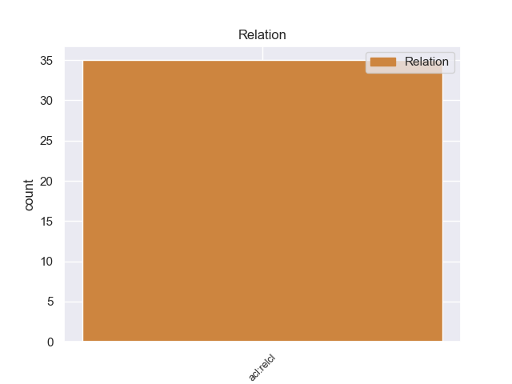
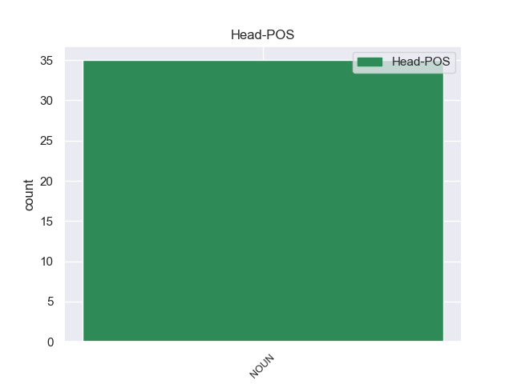
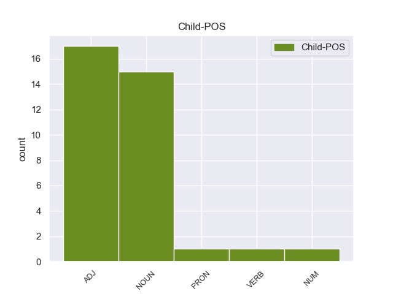

Distribution of features within this leaf



Morphosyntax Rules sorted by frequency.
- When the dependent token is the relative clause modifier(acl:relcl) of the head token, and the head token is NOUN the Case needs to be Nom.
1 Παρόμοιο _ _ _ _ 0 _ _ _
2 καθεστώς _ _ _ _ 0 _ _ _
3 επιδιώκουν _ _ _ _ 0 _ _ _
4 και _ _ _ _ 0 _ _ _
5 οι _ _ _ _ 0 _ _ _
6 πόλεις πόλη NOUN NOUN Case=Nom|Gender=Fem|Number=Plur 0 _ _ _
7 σ _ _ _ _ 0 _ _ _
8 τα _ _ _ _ 0 _ _ _
9 ανατολικά _ _ _ _ 0 _ _ _
10 της _ _ _ _ 0 _ _ _
11 Λιβύης _ _ _ _ 0 _ _ _
12 , _ _ _ _ 0 _ _ _
13 οι _ _ _ _ 0 _ _ _
14 οποίες _ _ _ _ 0 _ _ _
15 είναι _ _ _ _ 0 _ _ _
16 πλούσιες πλούσιος ADJ ADJ Case=Nom|Gender=Fem|Number=Plur 6 acl:relcl _ _
17 σε _ _ _ _ 0 _ _ _
18 κοιτάσματα _ _ _ _ 0 _ _ _
19 πετρελαίου _ _ _ _ 0 _ _ _
20 . _ _ _ _ 0 _ _ _
non-conforming Examples:
1 Γαλλικά _ _ _ _ 0 _ _ _
2 ΜΜΕ _ _ _ _ 0 _ _ _
3 μεταδίδουν _ _ _ _ 0 _ _ _
4 ότι _ _ _ _ 0 _ _ _
5 « _ _ _ _ 0 _ _ _
6 τρεις _ _ _ _ 0 _ _ _
7 ισχυρές _ _ _ _ 0 _ _ _
8 εκρήξεις _ _ _ _ 0 _ _ _
9 ακούστηκαν _ _ _ _ 0 _ _ _
10 κοντά _ _ _ _ 0 _ _ _
11 σ _ _ _ _ 0 _ _ _
12 το _ _ _ _ 0 _ _ _
13 σπίτι _ _ _ _ 0 _ _ _
14 του _ _ _ _ 0 _ _ _
15 άνδρα _ _ _ _ 0 _ _ _
16 που _ _ _ _ 0 _ _ _
17 θεωρείται _ _ _ _ 0 _ _ _
18 ύποπτος _ _ _ _ 0 _ _ _
19 για _ _ _ _ 0 _ _ _
20 τους _ _ _ _ 0 _ _ _
21 θανάτους _ _ _ _ 0 _ _ _
22 επτά _ _ _ _ 0 _ _ _
23 ανθρώπων άνθρωπος NOUN NOUN Case=Gen|Gender=Masc|Number=Plur 0 _ _ _
24 , _ _ _ _ 0 _ _ _
25 μεταξύ _ _ _ _ 0 _ _ _
26 των _ _ _ _ 0 _ _ _
27 οποίων οποίος PRON PRON Case=Gen|Gender=Masc|Number=Plur|Person=3|PronType=Rel 23 acl:relcl _ _
28 ήταν _ _ _ _ 0 _ _ _
29 και _ _ _ _ 0 _ _ _
30 τρία _ _ _ _ 0 _ _ _
31 παιδιά _ _ _ _ 0 _ _ _
32 , _ _ _ _ 0 _ _ _
33 εβραϊκής _ _ _ _ 0 _ _ _
34 καταγωγής _ _ _ _ 0 _ _ _
35 , _ _ _ _ 0 _ _ _
36 σε _ _ _ _ 0 _ _ _
37 σχολείο _ _ _ _ 0 _ _ _
38 σ _ _ _ _ 0 _ _ _
39 την _ _ _ _ 0 _ _ _
40 Τουλούζη _ _ _ _ 0 _ _ _
41 » _ _ _ _ 0 _ _ _
42 . _ _ _ _ 0 _ _ _
1 Το _ _ _ _ 0 _ _ _
2 εστιακό _ _ _ _ 0 _ _ _
3 βάθος _ _ _ _ 0 _ _ _
4 της _ _ _ _ 0 _ _ _
5 δόνησης _ _ _ _ 0 _ _ _
6 υπολογίστηκε _ _ _ _ 0 _ _ _
7 σ _ _ _ _ 0 _ _ _
8 τα _ _ _ _ 0 _ _ _
9 5 _ _ _ _ 0 _ _ _
10 χιλιόμετρα _ _ _ _ 0 _ _ _
11 , _ _ _ _ 0 _ _ _
12 προκαλώντας _ _ _ _ 0 _ _ _
13 την _ _ _ _ 0 _ _ _
14 κατάρρευση _ _ _ _ 0 _ _ _
15 των _ _ _ _ 0 _ _ _
16 περισσοτέρων _ _ _ _ 0 _ _ _
17 μεσαιωνικών _ _ _ _ 0 _ _ _
18 κτισμάτων _ _ _ _ 0 _ _ _
19 σ _ _ _ _ 0 _ _ _
20 το _ _ _ _ 0 _ _ _
21 κέντρο _ _ _ _ 0 _ _ _
22 της _ _ _ _ 0 _ _ _
23 πόλης _ _ _ _ 0 _ _ _
24 , _ _ _ _ 0 _ _ _
25 αλλά _ _ _ _ 0 _ _ _
26 και _ _ _ _ 0 _ _ _
27 κτιρίων κτίριο NOUN NOUN Case=Gen|Gender=Neut|Number=Plur 0 _ _ _
28 που _ _ _ _ 0 _ _ _
29 ήταν _ _ _ _ 0 _ _ _
30 νεότατης _ _ _ _ 0 _ _ _
31 κατασκευής κατασκευή NOUN NOUN Case=Gen|Gender=Fem|Number=Sing 27 acl:relcl _ _
32 σ _ _ _ _ 0 _ _ _
33 τα _ _ _ _ 0 _ _ _
34 περίχωρα _ _ _ _ 0 _ _ _
35 και _ _ _ _ 0 _ _ _
36 σ _ _ _ _ 0 _ _ _
37 τα _ _ _ _ 0 _ _ _
38 γειτονικά _ _ _ _ 0 _ _ _
39 χωριά _ _ _ _ 0 _ _ _
40 . _ _ _ _ 0 _ _ _
1 Τρίτον _ _ _ _ 0 _ _ _
2 , _ _ _ _ 0 _ _ _
3 πρέπει _ _ _ _ 0 _ _ _
4 να _ _ _ _ 0 _ _ _
5 καταφέρουμε _ _ _ _ 0 _ _ _
6 να _ _ _ _ 0 _ _ _
7 συμπεριληφθεί _ _ _ _ 0 _ _ _
8 οριστικά _ _ _ _ 0 _ _ _
9 ο _ _ _ _ 0 _ _ _
10 Νότιος _ _ _ _ 0 _ _ _
11 Καύκασος _ _ _ _ 0 _ _ _
12 σ _ _ _ _ 0 _ _ _
13 την _ _ _ _ 0 _ _ _
14 ημερήσια _ _ _ _ 0 _ _ _
15 διάταξη _ _ _ _ 0 _ _ _
16 των _ _ _ _ 0 _ _ _
17 σχέσεών _ _ _ _ 0 _ _ _
18 μας _ _ _ _ 0 _ _ _
19 με _ _ _ _ 0 _ _ _
20 τους _ _ _ _ 0 _ _ _
21 κυριότερους _ _ _ _ 0 _ _ _
22 συμμετέχοντες _ _ _ _ 0 _ _ _
23 που _ _ _ _ 0 _ _ _
24 ενδιαφέρονται _ _ _ _ 0 _ _ _
25 για _ _ _ _ 0 _ _ _
26 την _ _ _ _ 0 _ _ _
27 περιοχή _ _ _ _ 0 _ _ _
28 , _ _ _ _ 0 _ _ _
29 όπως _ _ _ _ 0 _ _ _
30 η _ _ _ _ 0 _ _ _
31 Ρωσία _ _ _ _ 0 _ _ _
32 , _ _ _ _ 0 _ _ _
33 η _ _ _ _ 0 _ _ _
34 Τουρκία _ _ _ _ 0 _ _ _
35 , _ _ _ _ 0 _ _ _
36 το _ _ _ _ 0 _ _ _
37 Ιράν _ _ _ _ 0 _ _ _
38 και _ _ _ _ 0 _ _ _
39 οι _ _ _ _ 0 _ _ _
40 Ηνωμένες _ _ _ _ 0 _ _ _
41 Πολιτείες _ _ _ _ 0 _ _ _
42 , _ _ _ _ 0 _ _ _
43 πράγμα πράγμα NOUN NOUN Case=Nom|Gender=Neut|Number=Sing 0 _ _ _
44 που _ _ _ _ 0 _ _ _
45 , _ _ _ _ 0 _ _ _
46 όπως _ _ _ _ 0 _ _ _
47 είπαν _ _ _ _ 0 _ _ _
48 μερικοί _ _ _ _ 0 _ _ _
49 από _ _ _ _ 0 _ _ _
50 σας _ _ _ _ 0 _ _ _
51 σ _ _ _ _ 0 _ _ _
52 τις _ _ _ _ 0 _ _ _
53 παρεμβάσεις _ _ _ _ 0 _ _ _
54 τους _ _ _ _ 0 _ _ _
55 , _ _ _ _ 0 _ _ _
56 είναι _ _ _ _ 0 _ _ _
57 και _ _ _ _ 0 _ _ _
58 προς _ _ _ _ 0 _ _ _
59 το _ _ _ _ 0 _ _ _
60 δικό _ _ _ _ 0 _ _ _
61 μας _ _ _ _ 0 _ _ _
62 συμφέρον συμφέρον NOUN NOUN Case=Acc|Gender=Neut|Number=Sing 43 acl:relcl _ SpaceAfter=No
63 , _ _ _ _ 0 _ _ _
64 μεταξύ _ _ _ _ 0 _ _ _
65 άλλων _ _ _ _ 0 _ _ _
66 για _ _ _ _ 0 _ _ _
67 λόγους _ _ _ _ 0 _ _ _
68 που _ _ _ _ 0 _ _ _
69 σχετίζονται _ _ _ _ 0 _ _ _
70 με _ _ _ _ 0 _ _ _
71 τον _ _ _ _ 0 _ _ _
72 ενεργειακό _ _ _ _ 0 _ _ _
73 εφοδιασμό _ _ _ _ 0 _ _ _
74 . _ _ _ _ 0 _ _ _
1 Τελευταίο _ _ _ _ 0 _ _ _
2 , _ _ _ _ 0 _ _ _
3 αλλά _ _ _ _ 0 _ _ _
4 όχι _ _ _ _ 0 _ _ _
5 λιγότερο _ _ _ _ 0 _ _ _
6 σημαντικό _ _ _ _ 0 _ _ _
7 , _ _ _ _ 0 _ _ _
8 το _ _ _ _ 0 _ _ _
9 γενικό _ _ _ _ 0 _ _ _
10 καθεστώς _ _ _ _ 0 _ _ _
11 δεν _ _ _ _ 0 _ _ _
12 προσφέρει _ _ _ _ 0 _ _ _
13 διατάξεις διάταξη NOUN NOUN Case=Acc|Gender=Fem|Number=Plur 0 _ _ _
14 που _ _ _ _ 0 _ _ _
15 είναι _ _ _ _ 0 _ _ _
16 ζωτικής _ _ _ _ 0 _ _ _
17 σημασίας σημασία NOUN NOUN Case=Gen|Gender=Fem|Number=Sing 13 acl:relcl _ _
18 σ _ _ _ _ 0 _ _ _
19 τον _ _ _ _ 0 _ _ _
20 τομέα _ _ _ _ 0 _ _ _
21 του _ _ _ _ 0 _ _ _
22 αυτοκινήτου _ _ _ _ 0 _ _ _
23 για _ _ _ _ 0 _ _ _
24 να _ _ _ _ 0 _ _ _
25 διασφαλίσει _ _ _ _ 0 _ _ _
26 τα _ _ _ _ 0 _ _ _
27 οφέλη _ _ _ _ 0 _ _ _
28 για _ _ _ _ 0 _ _ _
29 τον _ _ _ _ 0 _ _ _
30 καταναλωτή _ _ _ _ 0 _ _ _
31 . _ _ _ _ 0 _ _ _
1 Πρότεινε _ _ _ _ 0 _ _ _
2 να _ _ _ _ 0 _ _ _
3 επιτεθούν _ _ _ _ 0 _ _ _
4 μαζί _ _ _ _ 0 _ _ _
5 με _ _ _ _ 0 _ _ _
6 άλλους _ _ _ _ 0 _ _ _
7 επαναστάτες επαναστάτης NOUN NOUN Case=Acc|Gender=Masc|Number=Plur 0 _ _ _
8 που _ _ _ _ 0 _ _ _
9 ήταν _ _ _ _ 0 _ _ _
10 σ _ _ _ _ 0 _ _ _
11 το _ _ _ _ 0 _ _ _
12 Ακρωτήρι ακρωτήρι NOUN NOUN Case=Acc|Gender=Neut|Number=Sing 7 acl:relcl _ SpaceAfter=No
13 , _ _ _ _ 0 _ _ _
14 σ _ _ _ _ 0 _ _ _
15 τους _ _ _ _ 0 _ _ _
16 Τούρκους _ _ _ _ 0 _ _ _
17 και _ _ _ _ 0 _ _ _
18 να _ _ _ _ 0 _ _ _
19 τους _ _ _ _ 0 _ _ _
20 εκτοπίσουν _ _ _ _ 0 _ _ _
21 από _ _ _ _ 0 _ _ _
22 την _ _ _ _ 0 _ _ _
23 πεδιάδα _ _ _ _ 0 _ _ _
24 ( _ _ _ _ 0 _ _ _
25 η _ _ _ _ 0 _ _ _
26 Μαλάξα _ _ _ _ 0 _ _ _
27 είναι _ _ _ _ 0 _ _ _
28 σε _ _ _ _ 0 _ _ _
29 κάποιο _ _ _ _ 0 _ _ _
30 υψόμετρο _ _ _ _ 0 _ _ _
31 ) _ _ _ _ 0 _ _ _
32 . _ _ _ _ 0 _ _ _